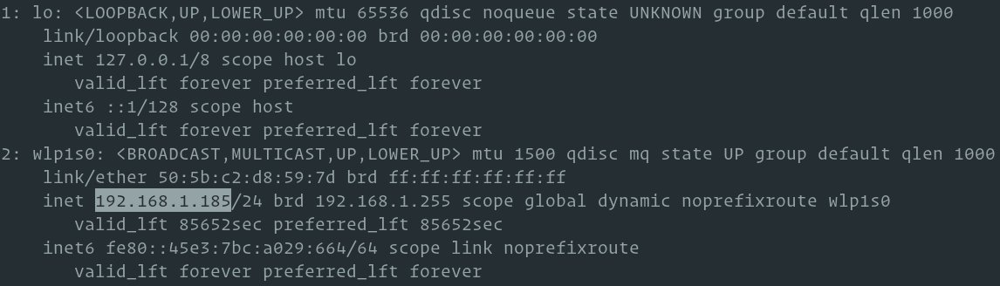

如何在 Linux 中查看 IP 地址
在排除网络问题，设置新连接或配置防火墙时，了解设备的 IP 地址非常重要。
IP 地址可以分为两类，公共和内部。公共 IP 是唯一的 IP 地址，可以从 Internet 访问。内部 IP 地址保留供您的专用网络内部使用，而不直接暴露给 Internet 。此外，有两种类型的 IP 地址， IP 版本 4(IPv4) 和 IP 版本 6(IPv6) 。
本文会介绍查看 Linux 系统的公共和内部 IP 地址的几种不同方法。
查找您的内部 IP 地址
内部 IP 地址不能通过 Internet 路由，并且只能在本地网络中工作。通常，路由器会将专用 IP 地址分配给本地网络中的每个设备。这为本地网络中的设备提供了唯一的 IP 地址，例如手机，笔记本电脑，智能电视，打印机，媒体中心等。本地网络上的设备通过 NAT(网络地址转换)连接到 Internet 。
以下 IPv4 地址范围是为专用网络保留的：
- 10.0.0.0/8
- 172.16.0.0/12
- 192.168.0.0/16
您可以通过使用命令查询网络堆栈确定系统的内部 IP 地址， 比如: ip, ifconfig 或 hostname 。
在 Linux 中，用于显示和配置网络接口的标准命令是 ip 。
要显示所有网络接口和相关 IP 地址的列表，请键入以下命令：
ip addr
输出结果如下所示。内部 IP 地址突出显示。

您还可以使用以下命令显示内部 IP 地址：
hostname -I
ifconfig
找到您的公共 IP 地址
公共 IP 地址是分配给网络设备的全局可路由 IP 地址，它直接访问 Internet 。它们由 ISP 分配给设备，每个设备都有唯一的公共 IP 地址。公共 IP 地址由归属路由器， Web 服务器，邮件服务器等使用。
确定公共 IP 地址涉及通过 HTTP/HTTPS 或 DNS 协议联系远程服务器，并从远程服务器响应中获取 IP 地址。
在桌面计算机上，查找公共 IP 地址的最简单方法是在浏览器中键入“我的 IP 是”。
如果你是一个无头的 Linux 服务器上，或者您想要确定 IP 地址，你可以使用命令行工具，如 shell 脚本变量 dig ， curl 和 wget 。
大多数 DNS 提供商(如 OpenDNS 和 Google) 都允许您查询其服务器并获取您的公共 IP 地址。
您可以使用以下任何命令获取您的 IP ：
-
dig ANY +short @ resolver2.opendns.com myip.opendns.com -
dig ANY +short @ resolver2.opendns.com myip.opendns.com -
dig ANY +short @ ns1-1.akamaitech.net ANY whoami.akamai.net
有许多在线 HTTP/HTTPS 服务可以使用您的公共 IP 地址进行响应。这里是其中的一些：
-
curl -s http://tnx.nl/ip -
curl -s https://checkip.amazonaws.com -
curl -s api.infoip.io/ip -
curl -s ip.appspot.com -
wget -O - -q https://icanhazip.com/
如果上述任何命令不起作用，则可能是在线服务有问题。
你甚至可以在你 ~/.bashrc 或 ~/.zshrc 文件创建一个别名，以后您不必键入并记住一个很长的命令。例如，您可以添加以下别名：
alias pubip='dig ANY +short @resolver2.opendns.com myip.opendns.com'
现在，只要您需要查看您的公共 IP ，只需输入 pubip 您的终端即可。
结论
我们向您展示了几种不同的命令和在线服务，您可以使用它们来查找您的私人和公共 IP 地址。